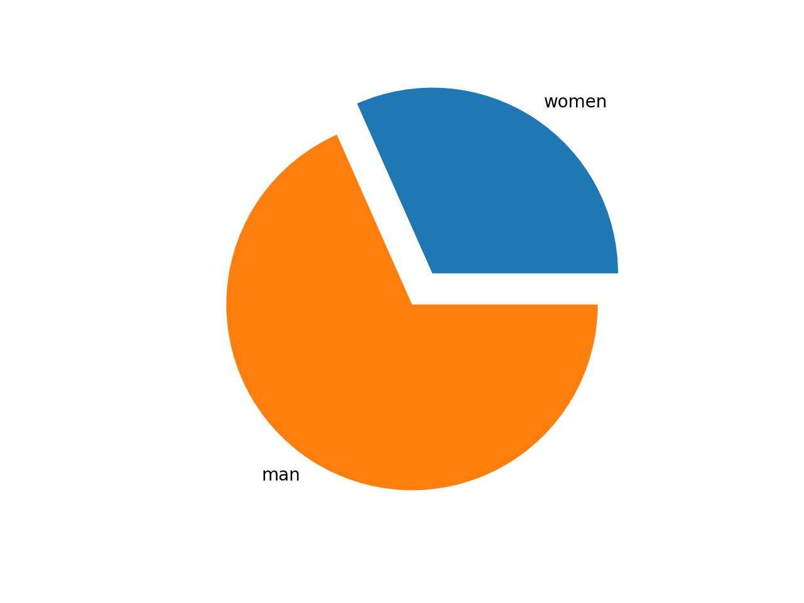
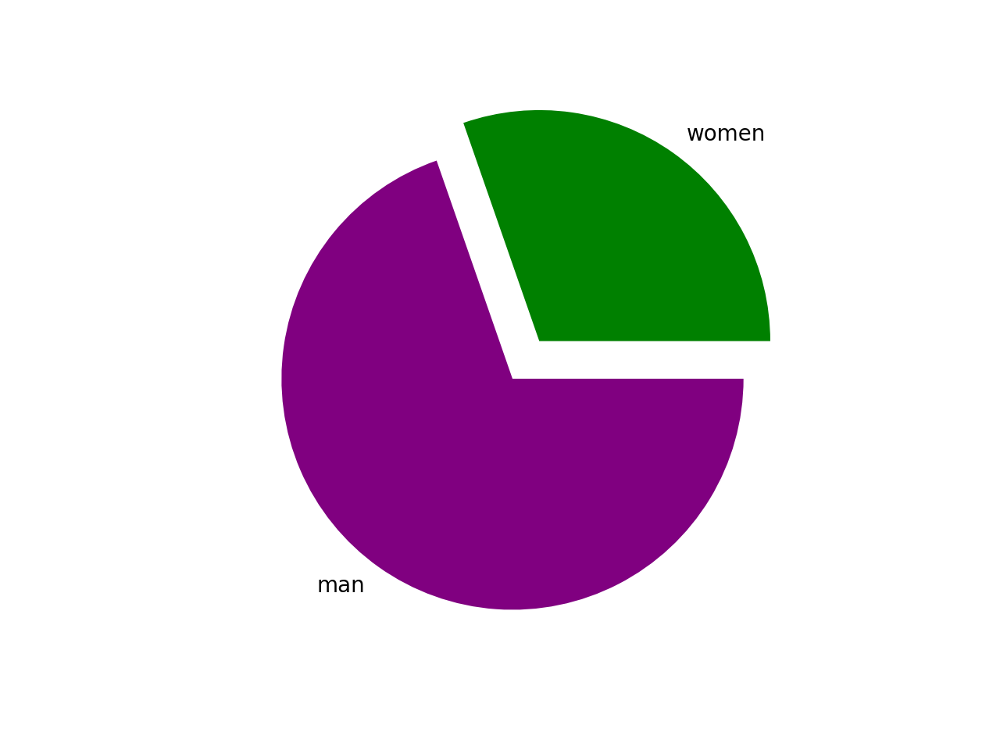
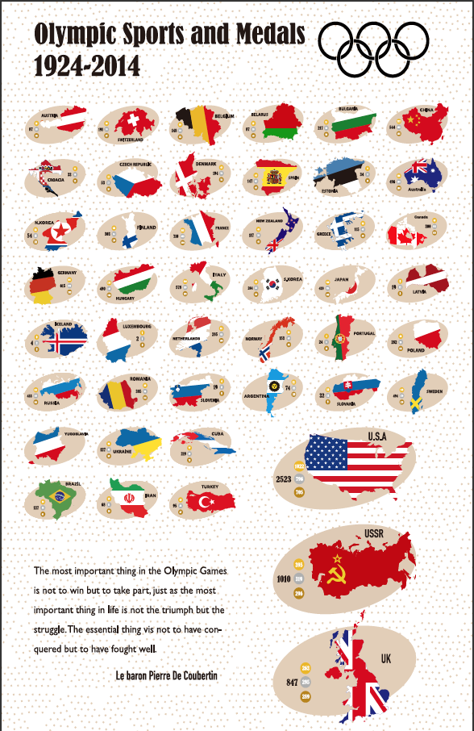

Number of women who competed & won awards between 1924-2014:

In this line chart, we see the total number of medals awarded to female athletes between 1924 and 2004. During this time, after 1980, women competed and won in increasing numbers. But not yet more than male athletes. In the next table, we will count the number of awards won by female athletes in specific sports
Number of female winners in each competition event:

In this line chart, we can see the total number of women who won gold, silver and bronze medals in each event. In the 1924-1392 Olympics, women won the highest number of medals in skiing. In ice skating, the second highest number of medals was won. In bobsledding, the smallest number of women won medals. This suggests that there may be differences in the physical makeup of men and women in certain sports.
Comparison of the total number of male and female athletes awarded:

In this pie chart, it can be seen that: from 1920 to mid-2004, the total number of medals won by men and women is not the same. There are about twice as many men as women. But this pie chart only counts the total number of medals won. In the next pie chart, we can compare the number of male and female athletes who won gold medals.
Comparison of male and female gold medal winners in the Olympics.

In this pie chart, we can see that men win twice as many gold medals as female athletes. Even when gold medals are counted separately, twice as many people win medals. But the line graph shows that the number of women winning awards is rising, so this is something for female athletes to celebrate.
Conclusion:

To sum up, to achieve true equality between men and women in Olympic competitions, it is not only necessary to increase the number of sports competitions that are suitable for women's body structure, but also to encourage women to participate. This would not only be a unilateral victory for feminists, but also a progress and success for humanity as a whole.